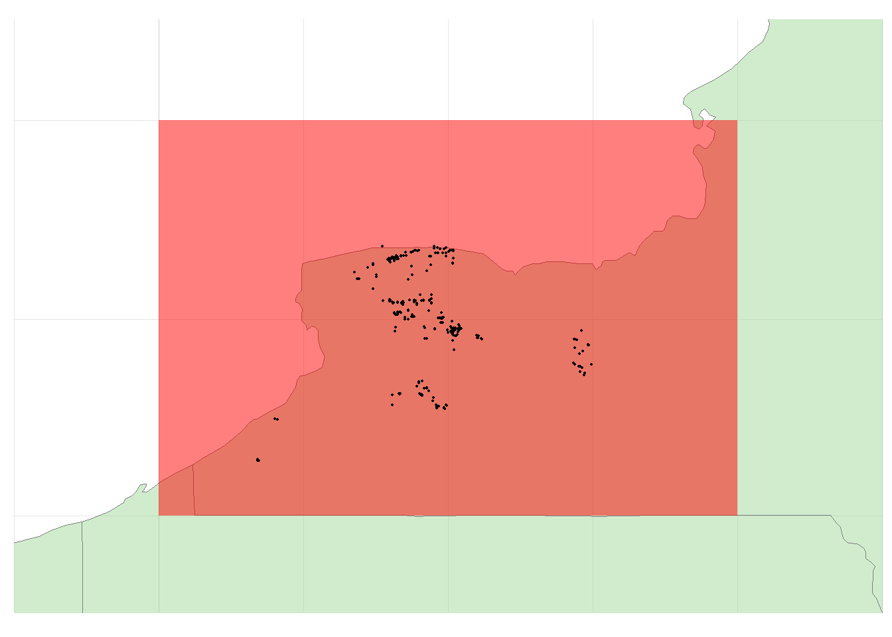
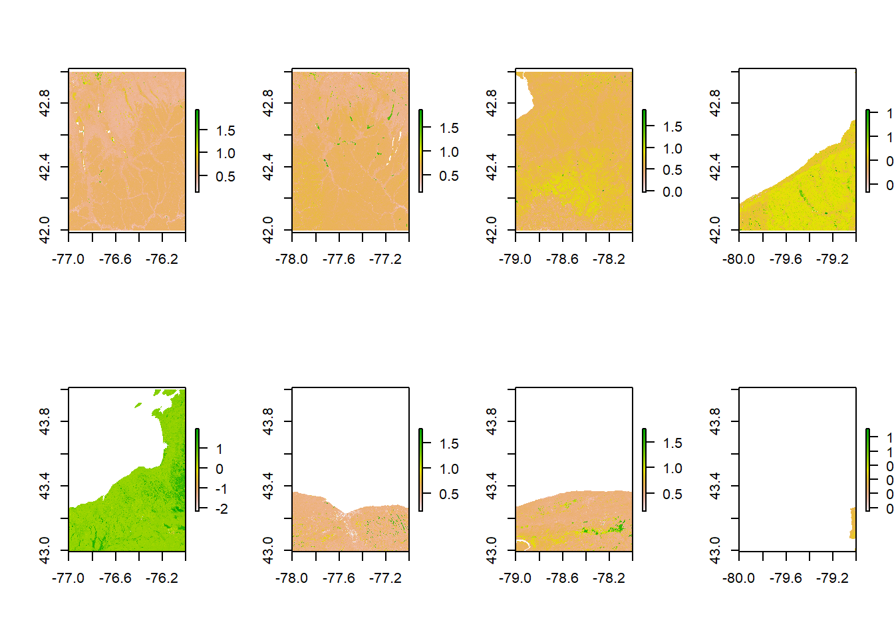
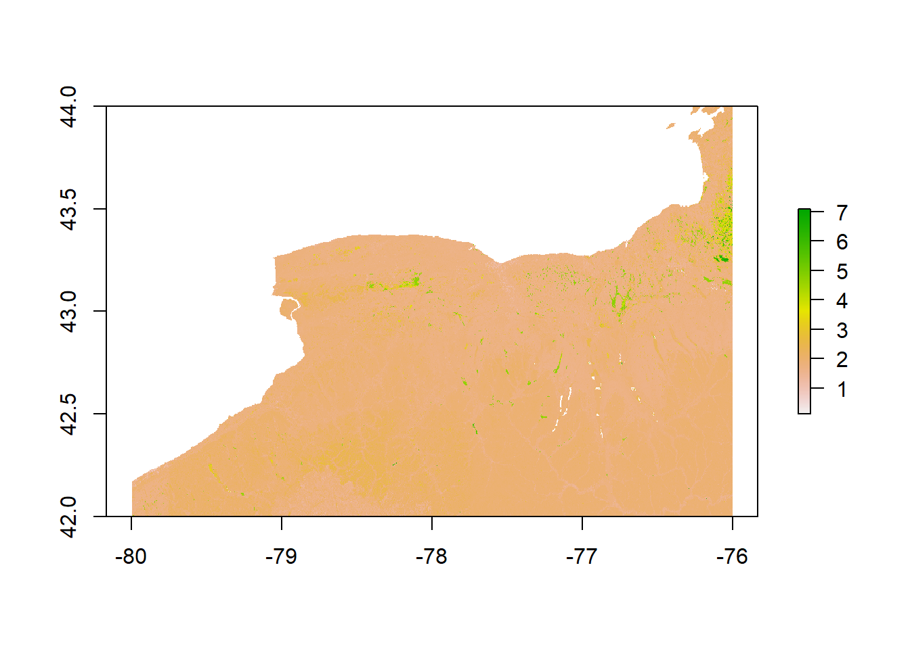
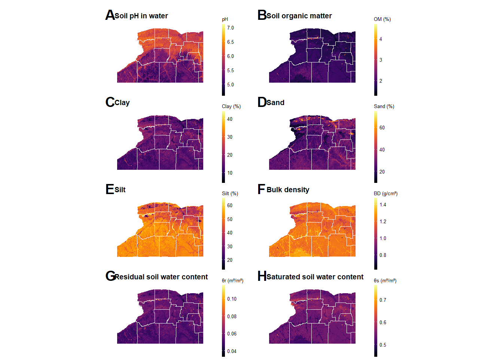

library(tidyverse)
library(cowplot)
library(patchwork)
library(daymetr)
library(raster)
library(spatstat)
library(KrigR)
library(lubridate)
library(sf)
library(viridis)
library(terra)
library(XPolaris)
library(MetBrewer)Soil data
Packages
About R packages
Make sure to have all R packages installed before running the analysis described in this website.
White mold data
Loading white mold data. We are going to use the field coordinates (latitude and longitude) to extract the data from the rasters of soil variables.
About the Data
In the research repository, the directories containing the soil, weather, white mold are compressed (data_era5.zip,soil_images.zip, data_white-mold.zip). You should unzip these files in the main directory to be able to reproduce the analysis.
wm_data = read.csv("data_white-mold/WhiteMoldSurveyWrangledData.csv")Removing missing coordinates
There are some missing coordinates in the dataset. Here we remove them.
wm_data2 = wm_data %>%
filter(!is.na(latitude))Soil variables
Locations
Setting up the coordinated of each quadrat we need to download the soil data
# exkansas
ny_locations = data.frame(ID = c("NY1","NY2","NY3","NY4","NY5","NY6","NY7","NY8"),
lat = c(42, 42, 42, 42, 43, 43, 43, 43),
long = c(-77, -78,-79, -80,-77, -78.0,-79.0, -80))
xplot(locations = ny_locations)+
geom_point(data = wm_data2 , size = 0.3,
aes(longitude,latitude))+
coord_map( xlim = c(-81,-75),
ylim = c(41.5,44.5))Coordinate system already present. Adding new coordinate system, which will replace the existing one.
# max(wm_data2$longitude)Download soil data
ny_images <- ximages(locations = ny_locations,
statistics = c('mean'),
variables = c('ph','om','clay',"sand","silt","bd", "hb","n","alpha","ksat","lambda","theta_r","theta_s"),
layersdepths = c('0_5'),
localPath = file.path("soil_images"))Here we read the metadata of the downloaded data. It containg the informatino regarding the directory of each downloaded file.
Merge images
Organic matter
We are going to filter only the lines contain information regarding Organic matter
om_df_images = ny_images %>%
filter(variables == "om")As you can notice in the next figure, the raster objects are downloaded in separate raster of 01 degree size
# read all files for organic matter
om_stack = lapply(om_df_images$local_file, brick)
par(mfrow = c(2,4))
for(i in 1:length(om_stack)){
plot(om_stack[[i]])
}
Therefore, we use the function merge() to create a single raster object covering the whole study region
om_ny_raster =merge(om_stack[[1]],
om_stack[[2]],
om_stack[[3]],
om_stack[[4]],
om_stack[[5]],
om_stack[[6]],
om_stack[[7]],
om_stack[[8]])
plot(exp(om_ny_raster))
Automatization
Instead of doing the above step for each variable by hand, here we created a function to do all the steps automatically.
get_soil_var = function(var, data){
data_filtered = data %>%
filter(variables == var)
stack_list = lapply(data_filtered$local_file, brick)
merged_raster = merge(stack_list[[1]],
stack_list[[2]],
stack_list[[3]],
stack_list[[4]],
stack_list[[5]],
stack_list[[6]],
stack_list[[7]],
stack_list[[8]]
)
return(merged_raster)
}
soil_vars = c('ph','om','clay',"sand","silt","bd", "hb","n","alpha","ksat","lambda","theta_r","theta_s")
selected_vars = c('ph','om','clay',"sand","silt","bd","theta_r","theta_s")soil_variables_list = lapply(soil_vars,get_soil_var, data = ny_images)
names(soil_variables_list) = soil_vars
saveRDS(soil_variables_list, "soil_images/list_soil_variables_raster.rds")aggre_var_list = lapply(soil_variables_list, aggregate,fact=30)
saveRDS(aggre_var_list, "soil_images/list_soil_variables_raster_aggregated.rds")Plot soil maps
NY shape file
Loading New York state shape file.
ny_shape1 = readOGR("shape_files/cugir-007865/cugir-007865/cty036.shp")OGR data source with driver: ESRI Shapefile
Source: "G:\.shortcut-targets-by-id\1tp3HzkoBOZ0949rE6UQ-y3_WEWrnsmPw\WhiteMoldSurvey\01-Kaique\01-Repository\shape_files\cugir-007865\cugir-007865\cty036.shp", layer: "cty036"
with 67 features
It has 80 fieldsCropping raster files
We use the function lappy() to crop all variables’ rasters using the NY shape file as a mask.
aggre_var_list2 = lapply(aggre_var_list, mask, ny_shape1)Then here we create a function for ploting the soil maps.
actual_var_names = c("Soil pH in water", "Soil organic matter","Clay","Sand","Silt","Bulk density","Residual soil water content","Saturated soil water content")
actual_var_symbol = c("pH", "OM","Clay","Sand","Silt","BD","\u03B8r","\u03B8s")
actual_var_units = c("", "(%)","(%)","(%)","(%)","(g/cm³)","(m³/m³)","(m³/m³)")
plot_gg_raster = function(X,raster, var){
# actual_var_names[X]
if(var[X] == "om"){xx=1}else{xx = 0}
as.data.frame(raster[[var[X]]], xy = T) %>%
filter(layer !="NaN", x< -76.8) %>%
mutate(layer = case_when(xx ==1~ exp(layer),
xx ==0~ layer)) %>%
ggplot(aes())+
geom_raster(aes(x, y, fill = layer))+
scale_fill_viridis(option ="B",guide = guide_colorbar(barwidth = 0.2, barheight =5 ))+
geom_polygon(data = ny_shape1,
aes(x=long, y = lat, group = group),
fill= NA,
size =0.2,
alpha = 0.5,
color = "white")+
# geom_point(data = wm_data2 , size = 0.1,color = "white",
# aes(longitude,latitude))+
coord_quickmap(xlim = c(-80,-76.8), ylim = c(42,43.35))+
theme_map()+
labs(title =paste(" ",actual_var_names[X]),
fill = paste(actual_var_symbol[X],actual_var_units[X]))
}
# selected_vars
# aggre_var_list[[1]]
# plot_gg_raster(1,aggre_var_list2, var = selected_vars[1] )Combo soil maps
Here we plot all maps into a single combo fiure
do.call(patchwork::wrap_plots, lapply(X =1:length(selected_vars) , FUN =plot_gg_raster, raster = aggre_var_list2, var = selected_vars))+
plot_layout(ncol = 2)+
plot_annotation(tag_levels = "A")&
theme(legend.position = "right",
legend.text = element_text(size = 5),
legend.title = element_text(size = 5),
plot.title = element_text(size = 7, face = "bold"))Regions defined for each Polygons
Regions defined for each Polygons
Regions defined for each Polygons
Regions defined for each Polygons
Regions defined for each Polygons
Regions defined for each Polygons
Regions defined for each Polygons
Regions defined for each Polygons
ggsave("figs/maps/soil_maps.png", dpi = 900, height = 7, width = 7, bg = "white")Extract variables to location
wm_data2_uni = wm_data2 %>%
group_by(subject) %>%
slice(1L)Selecting coordinate columns from the white mold data set
coords<-data.frame(lon=wm_data2_uni$longitude, lat=wm_data2_uni$latitude)
coordinates(coords)<-c("lon","lat")Extracting variable from the original merged raster (30 meters resolution)
df1 = lapply(soil_variables_list, extract, coords@coords)
as.data.frame(df1) %>%
mutate(subject =wm_data2_uni$subject) %>%
cbind(longitude=wm_data2_uni$longitude,
latitude=wm_data2_uni$latitude) %>%
write.csv("soil_images/extracted_soil_data.csv",row.names = F)